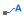

Die Registerkarte Konturbeschriftungen (Details Zeichnung)
PD-Dialog-Label4-Tab
Diese Registerkarte weist Bedienelemente für die benutzerdefinierte Anpassung des Formats von Konturbeschriftungen auf.
- Um zu steuern, welche Ebenen in Ihrem Konturdiagramm beschriftet werden, gehen Sie zur Registerkarte Farbpalette/Kontur.
- Die Einstellung der Anzeige und des Formats der Ebenenbeschriftung für die Farbskala von farbgefüllten Diagrammen nehmen Sie im Dialog Steuerung Farbskala vor.
-
Hinweis: Es gibt zwei Schaltflächen zum Beschriften auf der Minisymbolleiste:_Label4_Tab/Popup_Contour_Plot.png)
- Sie können die Beschriftungen der Konturlinien mit Hilfe der Schaltfläche Konturbeschriftungen zeigen aktivieren und benutzerdefiniert anpassen. 
- Sie können die Datenpunkte beim maximalen und minimalen Z-Wert mit Hilfe der Schaltfläche mit Hilfe der Schaltfläche Anmerkung für Minimum und Maximum hinzufügen mit einer Anmerkung versehen.
|
Schriftart
Wählen Sie aus dieser Auswahlliste einen Zeichensatz. Beachten Sie, dass die Auswahl Standard in der Auswahlliste Standard auf der Registerkarte Zeichensatz des Dialogs Optionen eingestellt wird.
Farbe
Wählen Sie eine Farbe für den Beschriftungstext der Kontur.
Größe
Wählen oder geben Sie in dieses Auswahlfeld die Größe ein. Die Größeneinheit entspricht Punkten.
Weiß hinterlegen
Aktivieren Sie dieses Kontrollkästchen, um für jede Datenbeschriftung einen weißen Hintergrund anzuzeigen.
Schaltflächen Akzent
Die Schaltflächen Fett, Kursiv und Unterstrichen werden zur Verfügung gestellt.
_Label4_Tab/Plot_Details_Accent_Buttons.PNG)
Zahlenformate
| Format |
Legen Sie das Anzeigeformat für die Ebenen der Farbpalette und Konturen in der Auswahlliste fest. Wählen Sie zwischen Dezimal-, Ingenieurs- und wissenschaftlicher Anzeige. Wenn Sie eine der Dezimalformate auswählen, verwendet Origin einen Schwellenwert zum Konvertieren in die wissenschaftliche Schreibweise. Dieser Schwellenwert wird über die Registerkarte Zahlenformat des Dialogs Optionen bestimmt (Einstellungen: Optionen).
|
| Teilungsfaktor |
Geben Sie einen Wert in dieses Textfeld ein und alle Ebenen der Farbpalette und Konturen werden durch diese Betrag geteilt.
|
| Dezimalstellen |
Wählen Sie diese Option, um die Anzeige der Nachkommastellen nach dem Dezimalzeichen einzustellen. Wählen Sie den gewünschten Wert aus dem zugehörigen Listenfeld.
|
| Signifikante Stellen |
Wählen Sie diese Option aus, um die Anzahl der angezeigten Stellen einzustellen. Wählen Sie den gewünschten Wert aus dem zugehörigen Listenfeld.
|
| Präfix/Suffix |
Geben Sie einen Wert in eines dieser Textfelder ein, die an die Beschriftungen der Farbpalette und Konturebenen der zugehörigen Textfelder angehängt werden sollen. Diese Textfelder werden im Diagramm angezeigt. Sie werden jedoch nicht auf der Ebenenliste auf der Registerkarte Farbpalette/Kontur angezeigt. Wenn Sie einen Wert in diese Textfelder eingeben, können Sie spezielle Formatierungsbefehle verwenden (die als "Escape-Sequenzen" bezeichnet werden), um den Schriftstil einzustellen (zum Beispiel hochgestellt, tiefgestellt und fett).
|
Beschriftungen wiederholen
Legen Sie fest, ob mehrere wiederholte Beschriftungen auf einer Konturlinie hinzufügt werden sollen.
Distanz zwischen Beschriftungen(%)
Legen Sie fest, wie weit die wiederholten Beschriftungen voneinander entfernt angezeigt werden. Der in dieser Option eingegebene Wert ist in der Einheit eines Prozentanteils der Schriftgröße. Dieser Abstand entscheidet auch über die Anzahl der wiederholten Beschriftungen auf einer Konturlinie.
Mit Konturlinie ausrichten
Legen Sie fest, ob die Beschriftungen der Konturlinie dem Fluss der Konturlinie folgen. Hinweis: Das Drehen der Beschriftung liegt vorzugsweise zwischen den Gradzahlen 0~90, 270~360.
Kurventoleranz
Die Kurventoleranz ist gleich dem Anteil der Distanz entlang der Konturlinie zur Distanz der Geraden zwischen den Endpunkten der Konturbeschriftung.
Sie bestimmt die maximale zugelassene Konturkrümmung beim Platzieren von Beschriftungen auf Konturlinien.
Beschriftungskriterien
Das Auswahlfeld Minimaler Bereich (%) kann verwendet werden, um einen Prozentwert so festzulegen, dass nur Konturen, die einen Bruchteil des Gesamtbereichs, der größer als der festgelegte Wert ist, eine mit ihnen verbundene Beschriftung haben.